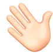
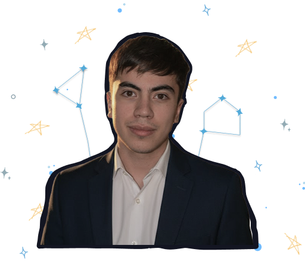

HELLO THERE
Agustín Wink | Desarrollador Web

UN POCO SOBRE MÍ Y LO QUE ME MUEVE🚀
Me gusta crear soluciones donde la lógica, el diseño y la eficiencia trabajen juntas. Soy meticuloso por naturaleza, y estudiar Ingeniería en Sistemas me ayudó a transformar esa forma de pensar en una manera clara y ordenada de hacer Desarrollo Web.
Me motivan los desafíos que me obligan a aprender algo nuevo y a salir de la rutina. Disfruto el proceso, el esfuerzo que hay detrás de cada proyecto y la sensación de estar explorando algo distinto en cada etapa del camino.